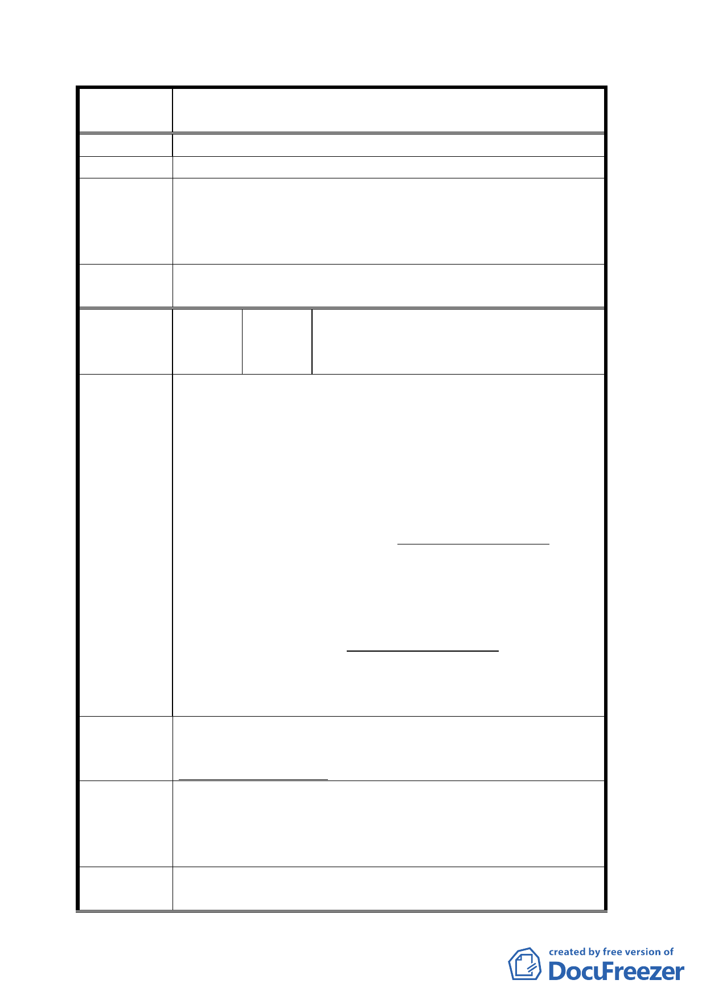

案
名
變更「修訂台北市主要計畫商業區（通盤檢討）計
畫案」內有關商業區變更回饋相關規定案
外面下大雨裡面下小雨。
建 議 辦 法 希望能改建，回饋任何條件都可接受。
一、 本案係針對 84 年商業區檢討案內所劃設商業區回饋
專案小組
條件之檢討，而非分區之變更，特予說明。
審 查 結 論 二、 至於因捷運通車造成房屋損壞之情形，則已由捷運工
程局處理。
委員會議
決議
依專案小組審查結論辦理。
溫玉麟等二人、許榕芳、蕭碧香、許秀
編 號 ２ 陳情人 綢、江德榮、莊建杰、彭勝謀、陳明星、
畢大清等二人
一、本區為供全市之零售業、服務業、娛樂業、金融事務
所其有關商業活動，現場房舍老舊、防火避難已妨礙
公共安全之虞，為滿足日後實際發展需求，應儘速予
以考量發展。
二、變更商業區之開發規模限制，依 84.9.27（八四）府都
二字第八四○六四三七七號函變更商業區通盤檢討
陳情理由
案，開發方式：本案商業區檢討原則上以不變更使用
強度為原則，惟基地規模達一千平方公尺以上或與鐵
路、捷運車站聯合開發者，得經台北市都市設計及土
地使用開發許可審議委員會或台北市都市計畫委員會
審議決定….。
三、修訂後公展案 93514 府都規字第 09305131400 號之基
地規模卻提高門檻達二千平方公尺以上得開發，已阻
礙實際執行面之可行性，無法改善房舍老舊、非商業
使用區之街廓做商業使用等違規使用、貨車裝卸貨佔
用路幅，增加道路壅塞之情形。
為改善、提升我等社區生活品質及環境景觀，及兼顧發展
建 議 辦 法 現況與適度滿足居民需求，懇請針對開發基地規模仍維持
達一千平方公尺以上之限制。
關於本陳情意見已於 94.3.17 第四次專案小組審查會議時說
專 案 小 組 明，本計畫案關於 2000 平方公尺的門檻，屬於申請容積獎
審 查 結 論 勵所制訂內容，至於基地新建、增建或改建，仍可依規定
申請辦理。
委員會議
決議
依專案小組審查結論辦理。
一一